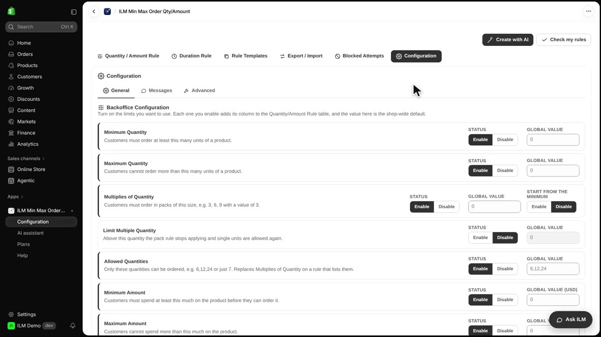
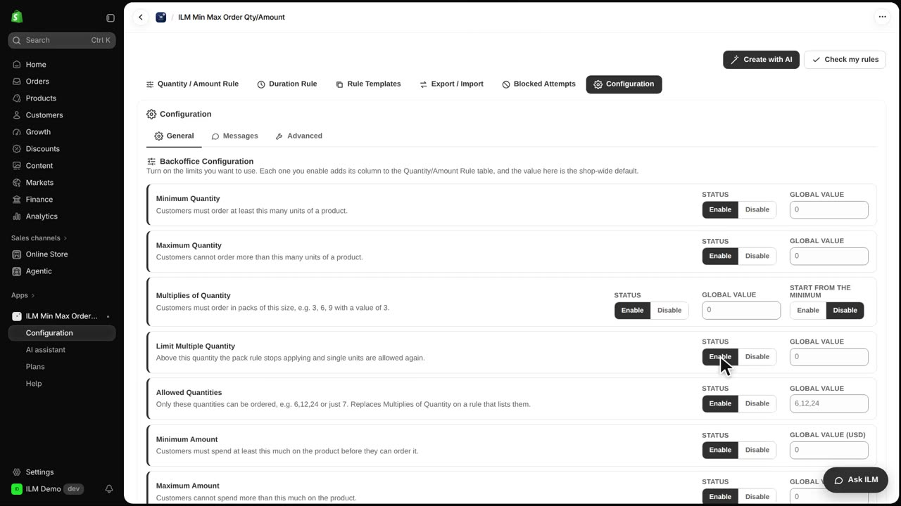
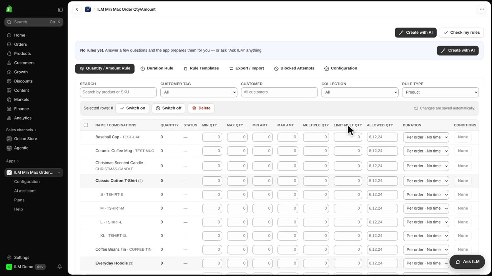
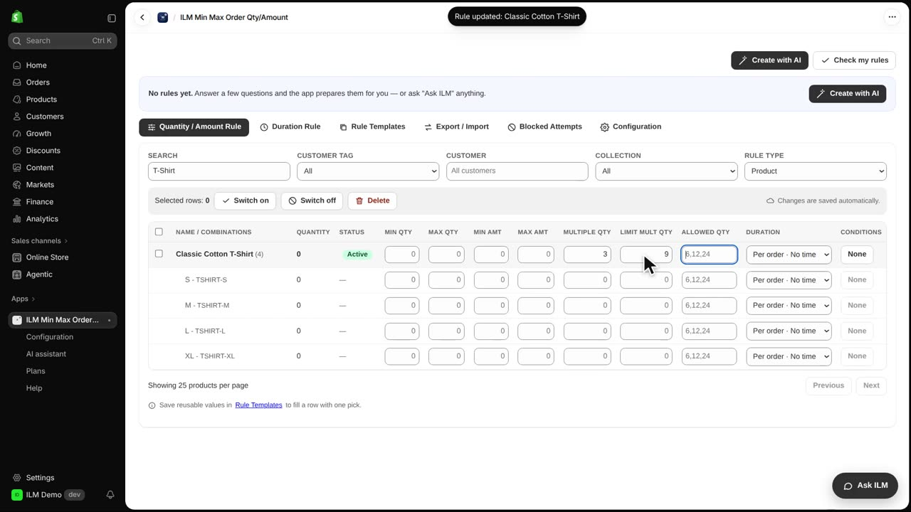
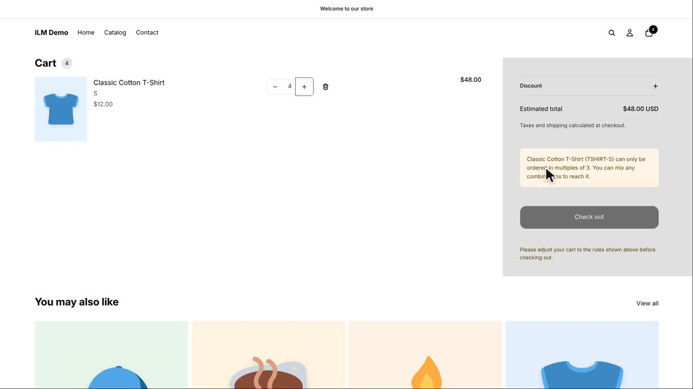
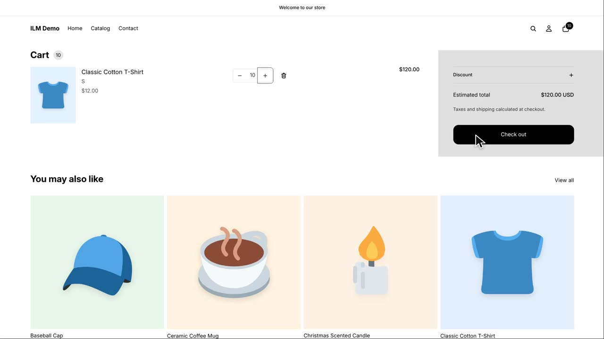

Limit Multiple Quantity is a setting that tells the app where your pack rule should stop applying. Without it, a pack rule like multiples of three would force every shopper to buy in threes, even someone ordering a large amount. Many shops want small orders to follow the pack size, but big orders to be free of it. Today we use the Classic Cotton T-Shirt, sold in packs of three, but with any quantity allowed above nine.
The limit is switched off when you first install the app. To turn it on, open the Configuration tab in the app menu.

On the General page, find the card called Limit Multiple Quantity and click Enable. Once it is on, the app will watch for a limit value on each rule. Nothing changes in your store until you also fill in a limit for a product.

Now go back to the Quantity / Amount Rule tab. In the rule grid there is a new column called Limit Mult Qty. This column only appears because you enabled the setting, and it is where you type the quantity above which the pack rule stops.

Search for the T-shirt in the grid. Type three in Multiple Qty, so the T-shirt is sold in packs of three. Then type nine in Limit Mult Qty, meaning that above nine units the pack rule no longer applies.

Let us see it in the store. The shopper adds four T-shirts to the cart. Because four is below the limit of nine, the pack rule still applies, and four is refused since it is not a multiple of three. The shopper sees a notice explaining the allowed quantities.

Now the shopper changes the quantity to ten. Ten is above nine, so the pack rule is skipped and the shopper can go straight to checkout. This is handy for wholesale buyers or anyone stocking up, while still keeping small orders in tidy packs.
